A 90-second film about what survived, and why it still matters: wellbeing is something we make together.
The film follows one idea, taken from the script's bold lines: optimal wellbeing is created through relationship, and illness is a disruption in the wider relationships that sustain life. We keep only the lines that carry this idea and leave the rest for future pieces.
The visual thread is a wall dissolving. It comes straight from the Ghanaian elder's interview: "In my village… there are no walls." Over the film, closed and isolated frames (concrete, glass, one person alone) open onto horizon, community, land and fire. Closeness returns. Nothing is explained in full. The film draws people in through beauty first and lets the words land second.
Slow, warm, editorial. Long held frames, soft natural light, close crops on hands, feet, skin, smoke and water. Regal and abundant, never sorrowful.
A fine gold thread line-art motif links people, plants and rhythm. It works as a quiet visual "science" layer: a heartbeat line syncing to a drum, a relationship web drawn between hands.
From "Connection + Relationships + Living a Peaceful Life." His own voice plays straight after the first bold line, as living proof of it. This is about 12 seconds, so it doesn't take over the film.
"In my village, nobody builds a house with a wall surrounding it. There are no walls. From here I can see the next five, six, ten houses… we are each his brother's keeper."
Treatment: we open on AI-rendered details of his world: warm louvre-window light, carvings, framed photographs, his hands. Then the camera pushes into a picture frame on his wall, which becomes a window onto his real footage, graded warm and cropped close. This "living archive" frame becomes a repeatable device, so any future Storied interview can drop into the film the same way.
We will never generate an AI voice or an AI likeness of a real person. Real people are only seen and heard as themselves.
| Time | Voice | Picture |
|---|---|---|
| 0:00 | It's fascinating to see what survives when everything is designed to destroy it. Packed into ships. Written off as superstition. Called primitive. And still, it survived. | Night ocean, ship timber, light on water. Seeds held in palms and braided into hair. History told through symbol, never through suffering. |
| 0:14 | Today we have every tool to be well, and we're still unravelling. | The "wall": glass towers, a lone figure lit by a screen. Cool, muted. The only cold moment in the film. |
| 0:20 | Pan-African wellbeing runs on a different engine, refined across millennia. At its core: optimal wellbeing is created through relationship. With your body. Your community. The land. Your ancestors. Spirit, and meaning. | The wall dissolves into horizon. One gold-thread line per relationship: a hand on skin, a shared table, red earth, an elder's portrait, fire. |
| 0:36 | ELDER (real voice): "There are no walls… we are each his brother's keeper." | Living-archive frame: AI details of his world, then his real footage. |
| 0:48 | Because illness isn't merely a biological glitch. It's a disruption in the wider relationships that sustain life. | Gold threads fray, then re-knot. Subtle typography lands the line on screen. |
| 0:56 | So the medicine lives in everyday life. In kanna and bitter melon. In the kora and the mbira. In a whole room locking in to swag surf. In marula oil and red ochre. At the cookout, where elders, music and recipes gather the village. | The sensory peak. Rhythmic cuts on the beat: botanicals, strings, dancing shoulders, ochre on skin, smoke and laughter around a grill. |
| 1:14 | Wellness was never meant to be carried alone. | Wide: a circle of people, golden hour. |
| 1:18 | Maybe the real mystery isn't how these traditions survived. Maybe it's how a modern world so obsessed with living longer forgot how to actually be alive. | The elder's view from his door: open land, neighbours' houses. Fade to the Storied mark. |
About 190 words in total, paced for 85–90 seconds. All wording is drawn from the approved script, and both bold lines are kept word for word.
The film is structured like breath: sparse → swell → stillness → full. It opens on low ocean texture and a single kora phrase. Mbira and soft percussion enter at "relationship." The score drops almost to silence under the elder so his voice sits on room tone and birdsong. Rhythm builds under the sensory montage, with a nod to the swag-surf groove, then resolves into warm strings, distant laughter and fire crackle. Every cue will be licensed or originally composed. Narration is warm, unhurried and intimate, never "announcer."
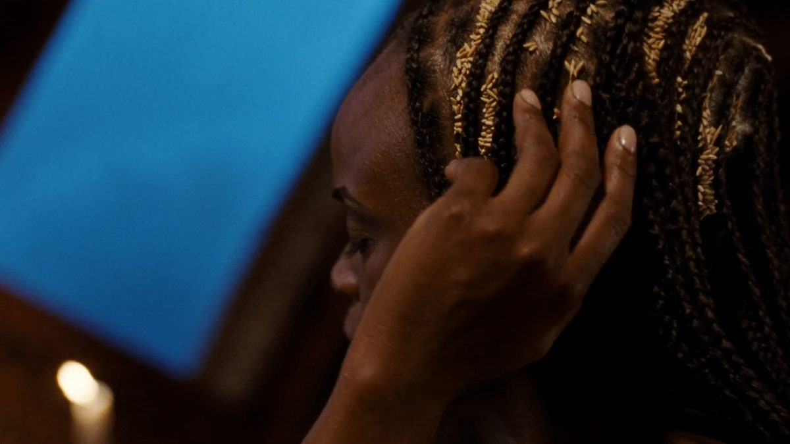
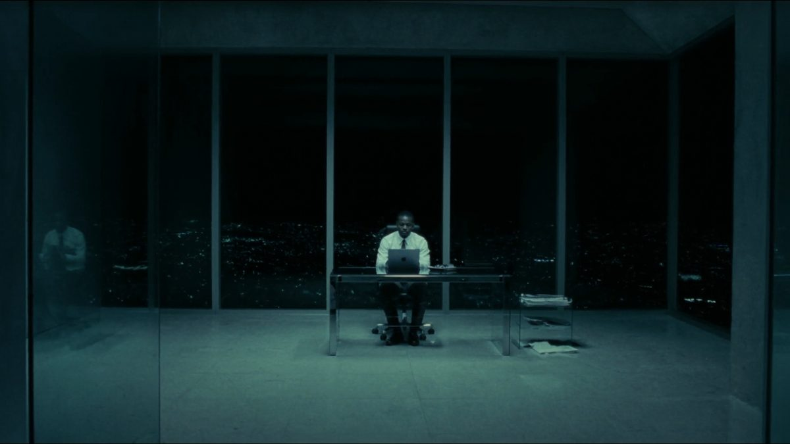
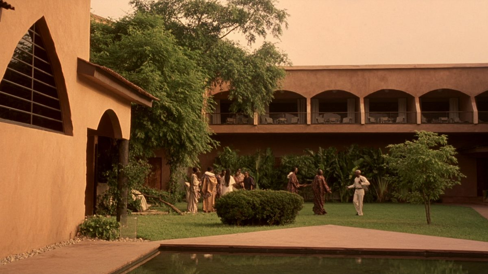
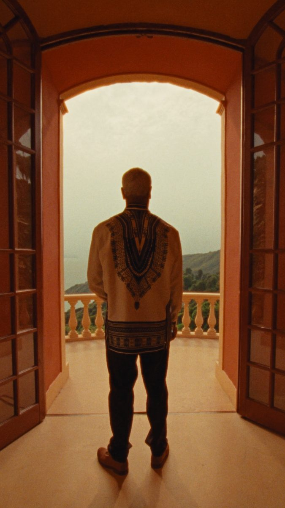
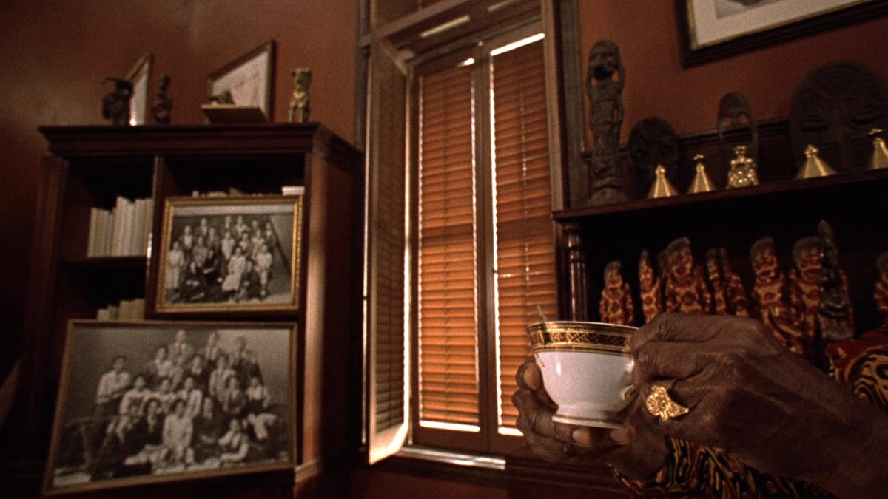
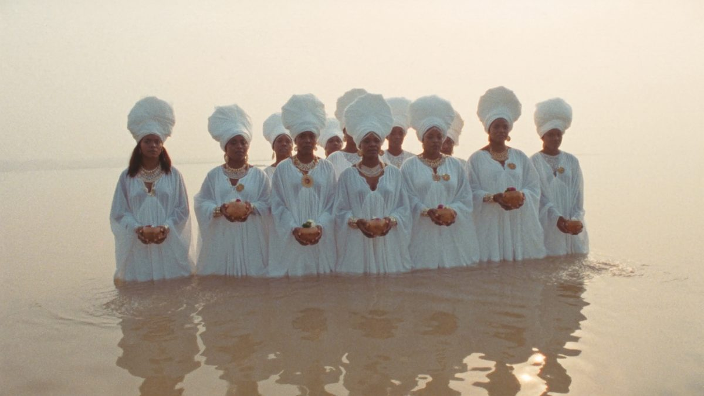
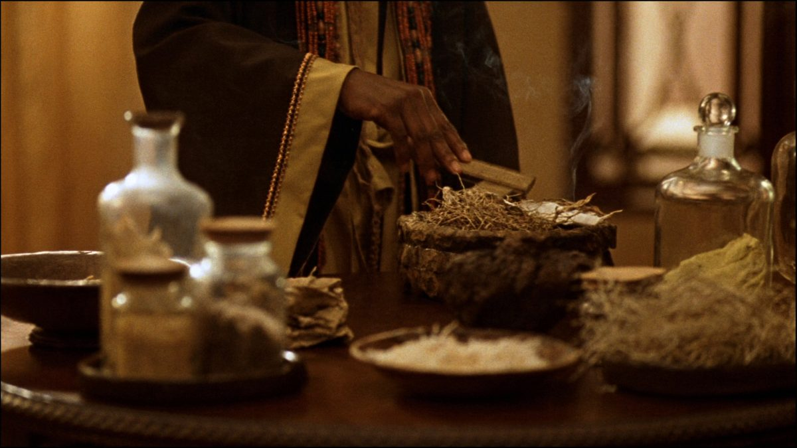
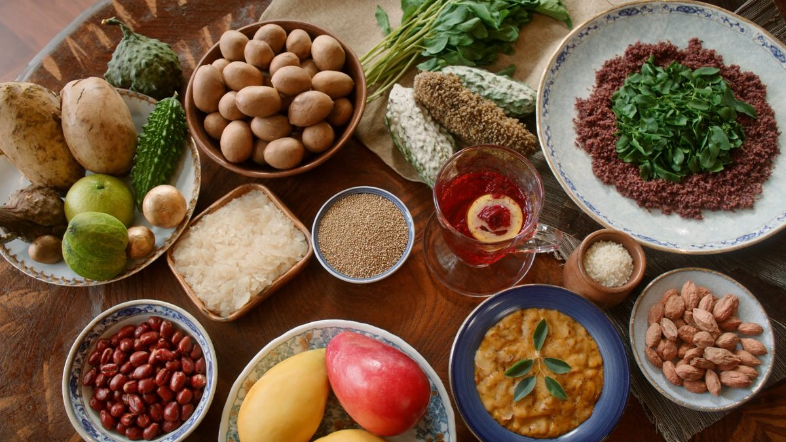
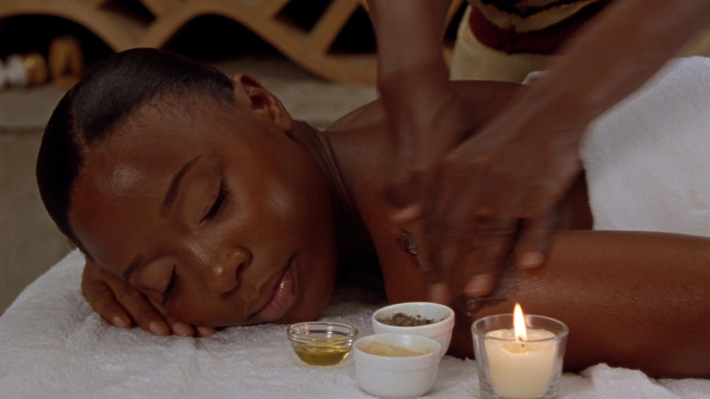
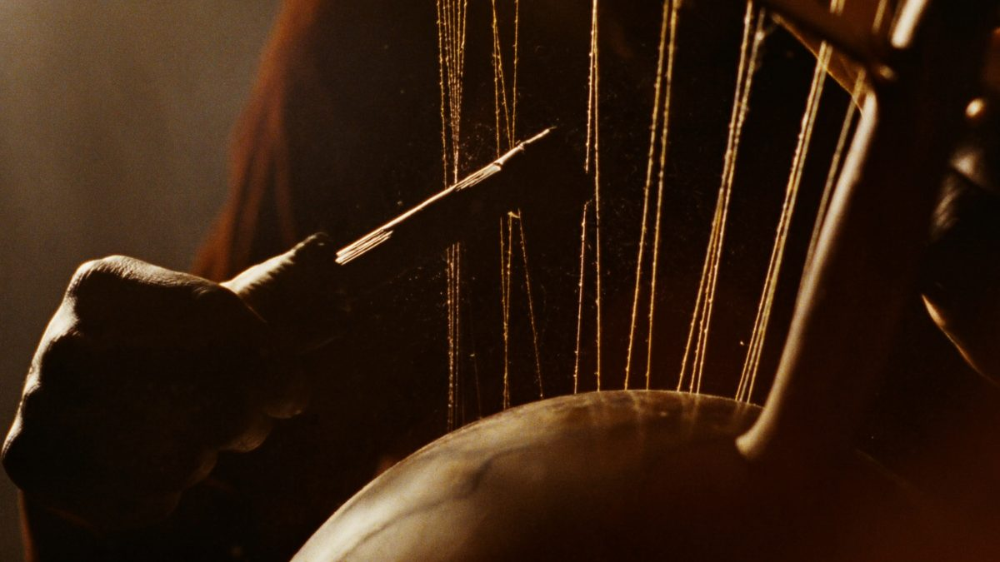
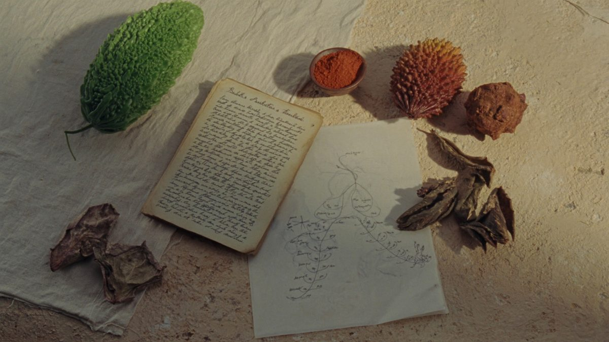
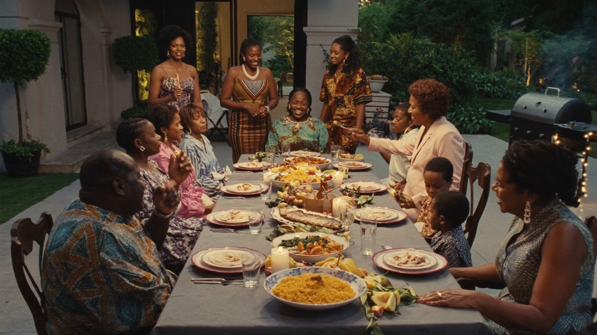
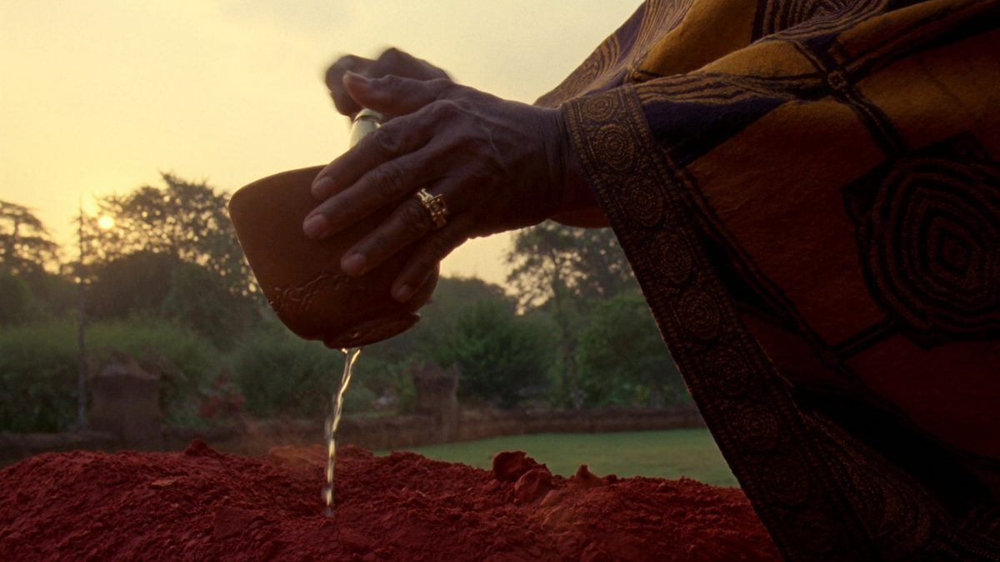
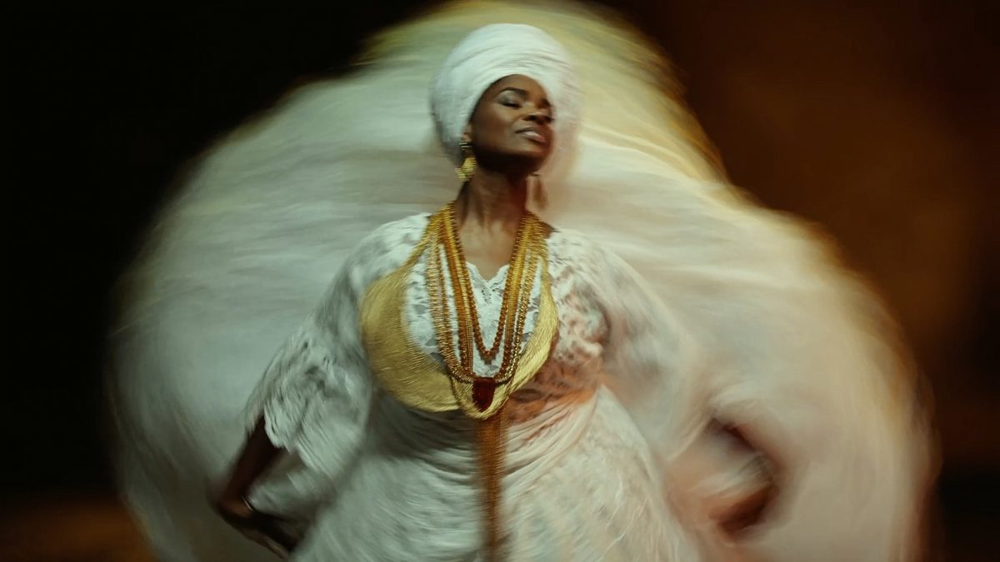
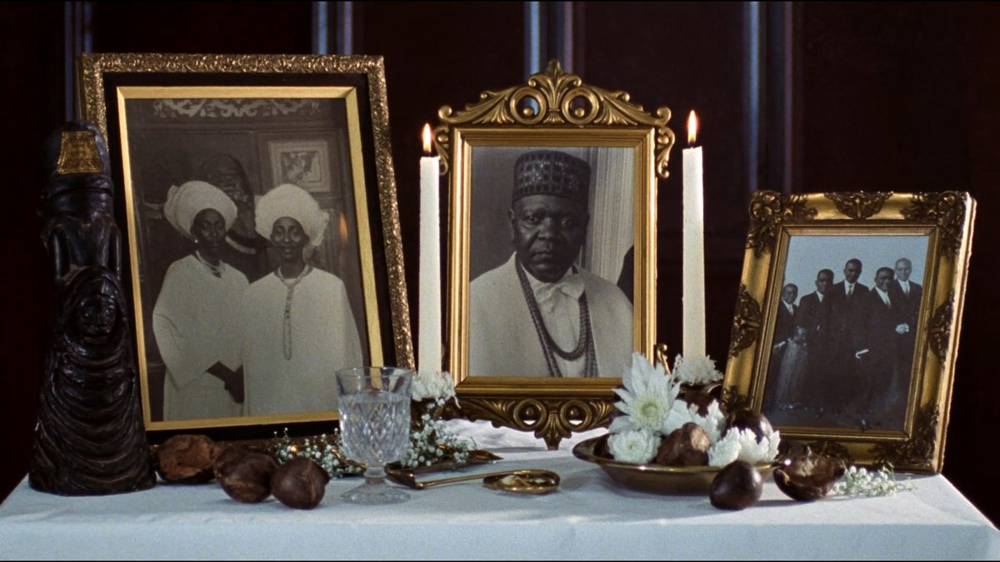
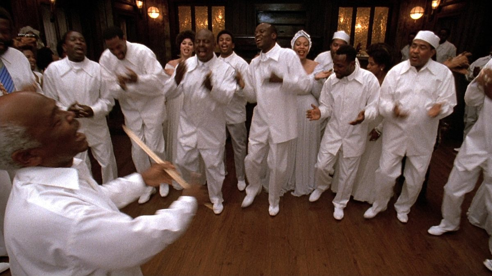
On-screen type follows the Storied documents: bold uppercase sans-serif for statements, light weight for supporting lines. Text appears sparingly, only for the bold lines and place names.
Daughters of the Dust (Julie Dash): Gullah Lowcountry memory and ritual, painterly light, unhurried pace.
Kwame Brathwaite, "Black Is Beautiful": regal, abundant, adorned portraiture.
Bradford Young's cinematography: low warm light, skin rendered with richness and depth.
Arthur Jafa, Love Is the Message: rhythmic collage and the power of the cut on beat (reference for the montage only).
Kahlil Joseph's short films: dreamlike blending of archive, music and the present.
Storied's own documents: stone, linen, warm shadow and quiet luxury.
"Maybe the real mystery isn't how traditions across the African diaspora survived. Maybe it's how a modern world so obsessed with living longer forgot how to actually be alive."